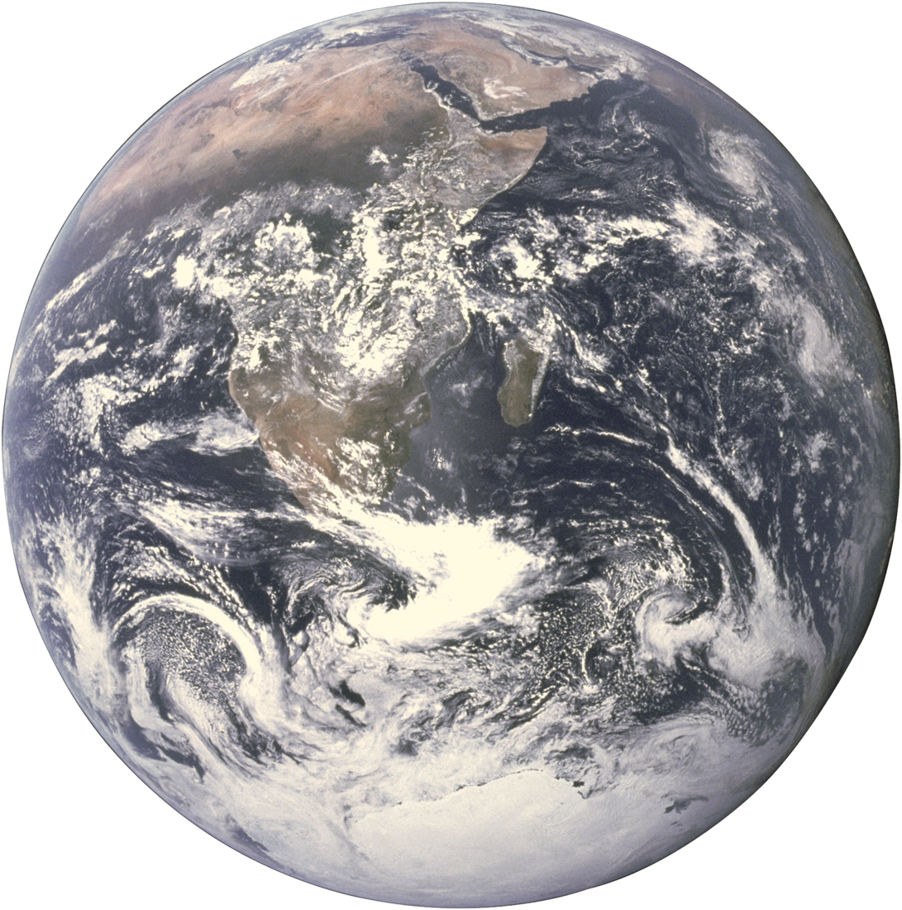
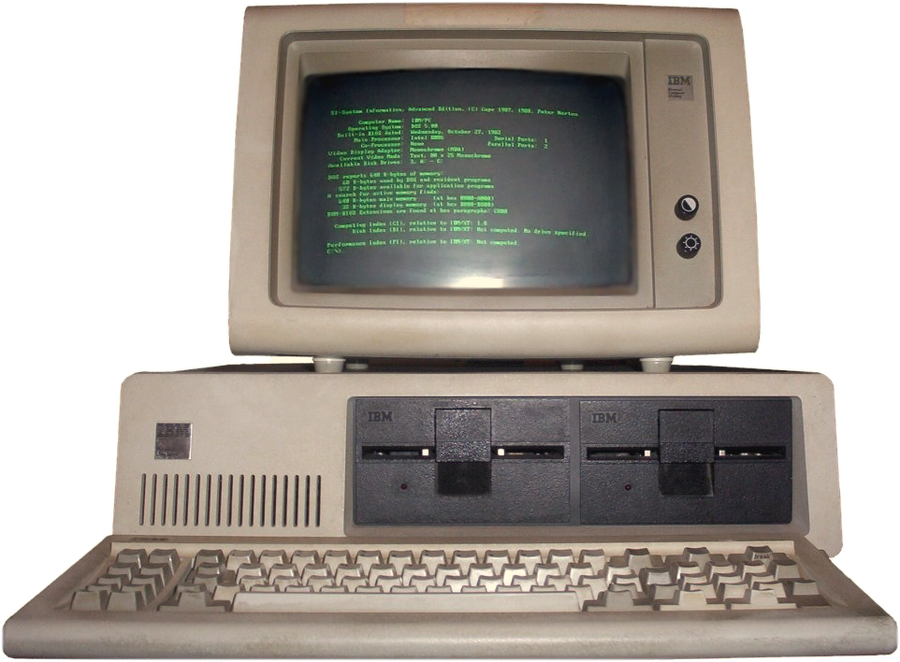
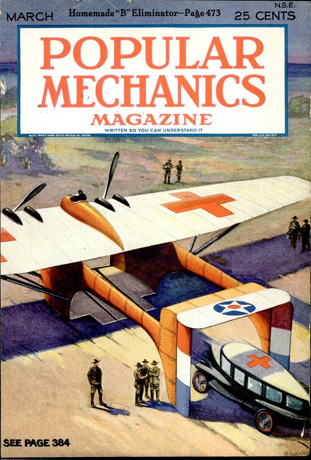
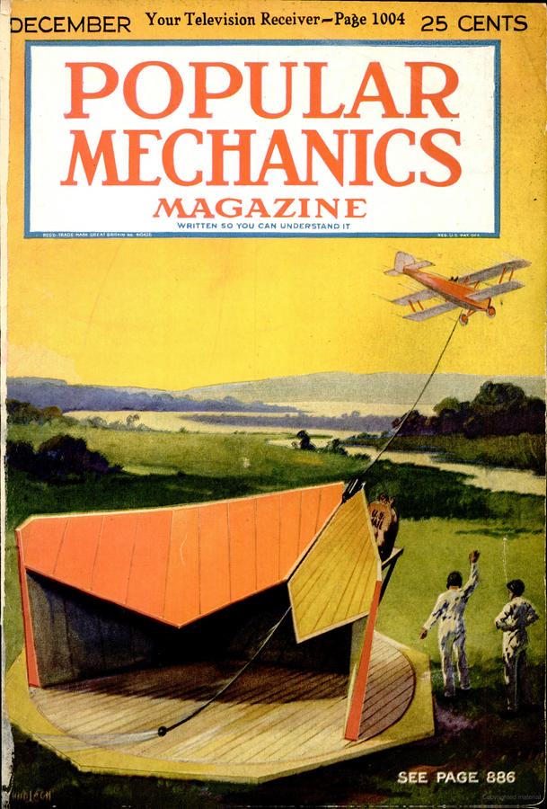
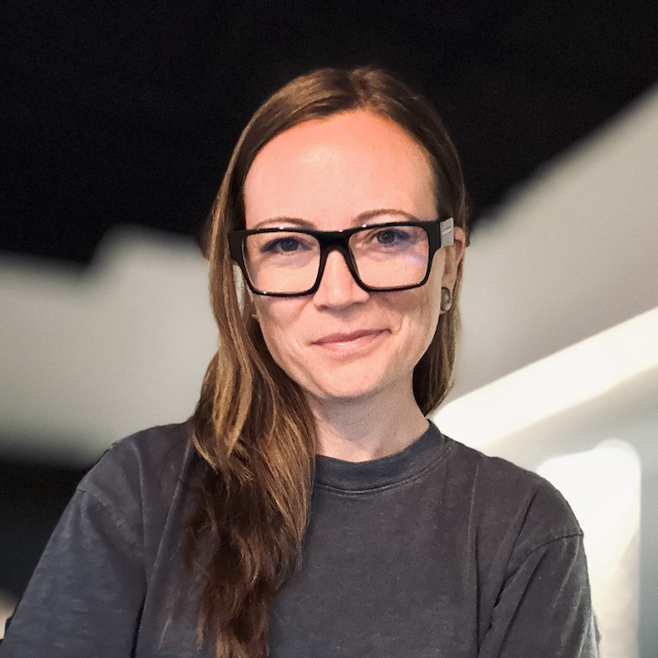

Plate I — the practice
Nothing on the shelf fits.
Artisan Technology LLC designs and builds custom software and hardware to solve problems that don't fit off-the-shelf solutions.
Plate II — the engineer
Lindsay Moore
Principal Engineer · 10+ years
I'm a Design Thinker with 10+ years of experience. Really, I'm someone who's spent a decade asking "what if we did it this way?" and then building it.
I design systems, build things that matter, and bring a maker's mindset to every problem. I believe the best engineering is equal parts rigor and imagination.



Idea » Prototype » Production
Ideasee it first
Prototypebuild it to find out
Productionlaunch it, together
I like interesting questions and the full arc: idea >> prototype >> production. I imagine big, tell the story that illuminates a path, then make sure we all finish together.
Where it all came from.
Education
- Master's, Computer ScienceUniversity of Chicago
- Master's, InformaticsUniversity of Minnesota
- Bachelor's, Production, Engineering & BusinessMcNally Smith College
Community & research
- Board, Pumping Station: OneChicago's oldest and largest hackerspace
- Research, STAGE CenterA multidisciplinary technology and arts lab at UChicago
- Research, Chicago Virtual ProductionAn independent virtual production group